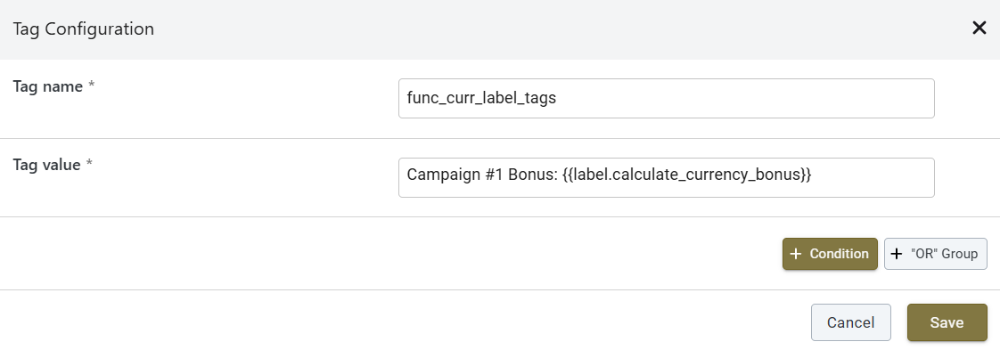

Від налаштування до динамічного контенту: повний гайд
🚀 1. Що таке Push-повідомлення та де вони відображаються?
Що це таке?
Push-повідомлення — це короткі сповіщення, які з'являються на екрані користувача, навіть якщо він не перебуває на вашому сайті чи в додатку. Це чудовий спосіб швидко донести важливу інформацію або нагадати про акцію.
Де вони відображаються?
На комп'ютерах (ПК): У веб-браузерах (Chrome, Firefox, Edge, Safari). Користувач має надати дозвіл на отримання сповіщень у своєму браузері.
На мобільних телефонах:
У мобільних додатках (якщо інтегровано).
У веб-браузерах (наприклад, Chrome на Android).
На iOS (iPhone/iPad) — веб-пуші працюють, якщо користувач додав ваш сайт на головний екран як "Web App" (PWA). Без цього пуші в Safari на iOS не приходять.
⚠️ Важливо: Дозвіл користувача
Push-повідомлення завжди вимагають явного дозволу від користувача. Без цього дозволу (який він надає у своєму браузері або додатку) пуші не будуть доставлені.
⚙️ 2. Базове налаштування Push-повідомлення
Створення Push Asset
Push-повідомлення створюються як "Assets" (шаблони) у Smartico, які потім використовуються в кампаніях.
Перейдіть у Marketing → Assets → Push Notifications.
Натисніть "Create New Push".
Заповніть основні поля:
Title (Заголовок): Короткий, привабливий заголошення.
Message (Текст повідомлення): Основний текст пуша. Тут можна використовувати прості змінні, наприклад, {{state.user_first_name}}, щоб звертатися до користувача на ім'я.
URL: Посилання, куди перейде користувач після натискання на пуш.
Image (Зображення): URL великого зображення для пуша (необов'язково, але робить пуш привабливішим).
Icon (Іконка): URL маленької іконки, яка відображається поруч із заголовком.
Збережіть ваш Push Asset.
💡 Проста персоналізація
Ви можете легко додати ім'я користувача до повідомлення, використовуючи {{state.user_first_name}}. Наприклад: "Привіт, {{state.user_first_name}}! У нас для тебе бонус!"
⚠️ 3. Важливо! Обмеження Liquid-логіки в Push-повідомленнях
Проблема: Чому складний Liquid-код не працює?
У полі "Message" Push-повідомлень (і SMS) можна використовувати теги для виведення значень змінних, наприклад, {{state.user_first_name}}. Однак, не можна використовувати складну Liquid-логіку, таку як умовні оператори ({% if %}, {% case %}) або цикли ({% for %})).
Це пов'язано з тим, що Push-повідомлення оптимізовані для швидкої доставки, і їхній механізм не підтримує виконання складних програмних команд безпосередньо в тексті повідомлення.
❌ Цей код НЕ буде працювати в полі "Message" Push-повідомлення
Якщо ви спробуєте вставити такий код:
{% case state.core_wallet_currency %}
{% when 'CAD' %}30 CAD
{% when 'USD' %}20 USD
{% when 'AUD' %}30 AUD
{% when 'NZD' %}30 NZD
{% when 'NOK' %}200 NOK
{% else %}20 EUR
{% endcase %}
Ви не побачите бажаного результату (наприклад, "30 CAD"). Швидше за все, повідомлення прийде порожнім у цьому місці або взагалі не відобразиться, або в тексті пуш повідомлення буде відображений цей код як текст, оскільки система не зможе обробити цю логіку.
💡 4. Просте Рішення: Динамічний контент у Push-повідомленнях
Основна ідея
Для інтеграції динамічного контенту в Push-повідомлення, коли складна Liquid-логіка не підтримується, Smartico дозволяє використовувати JavaScript-код, розміщений у Label Tag. Цей розділ описує простий підхід, при якому обчислене значення з Label Tag безпосередньо вставляється в повідомлення, а також розширені можливості з Campaign Tags.
Метод 1 Динамічний контент безпосередньо з Label Tag
Цей метод ідеально підходить для випадків, коли вам потрібно відобразити динамічне значення, обчислене за допомогою JavaScript, без необхідності зберігати його в профілі користувача. Значення обчислюється "на льоту" під час відправки повідомлення.
Крок 1 Створення Label Tag з JavaScript-логікою
Тут ми напишемо JavaScript-код, який буде обчислювати потрібну суму залежно від валюти користувача. Цей код буде розміщений у спеціальному Label Tag.
Перейдіть до Marketing → Labels (Маркетинг → Мітки).
Натисніть кнопку "Create New Label" (Створити нову мітку).
У полі "Name" (Назва) введіть унікальне ім'я для вашого Label Tag, наприклад: calculate_currency_bonus.
У полі "Tag value type" (Тип значення тегу) виберіть "JavaScript function".
У полі "Value" (Значення) вставте наступний JavaScript-код:
✅ JavaScript-код для Label Tag
(function() {
const getAmountByCurrency = function(userCurrency) {
const currency = (userCurrency || '').toUpperCase(); // Перетворюємо валюту на великі літери
switch (currency) {
case 'EUR':
case 'USD':
return 20;
case 'CAD':
case 'AUD':
case 'NZD':
return 30;
case 'NOK':
return 200;
default:
return 0; // Якщо валюта не збігається, повертаємо 0
}
};
// JavaScript-код, розміщений у Label Tag, має доступ до об'єкта 'state'
const userCurrency = state.core_wallet_currency;
// Обчислюємо суму бонусу за допомогою нашої функції
const amount = getAmountByCurrency(userCurrency);
// Формуємо фінальний рядок (наприклад, "20 USD")
const result = amount + ' ' + userCurrency;
return result; // Повертаємо обчислений рядок
})();
Пояснення коду:
(function() { ... })(); — це самозапускаюча функція. Вона виконується одразу, як тільки Smartico її "прочитає".
state.core_wallet_currency — JavaScript-код, розміщений у Label Tag, має доступ до об'єкта state, який містить дані про користувача.
Функція getAmountByCurrency визначає суму бонусу залежно від валюти.
return result; — те, що поверне ця функція, і буде кінцевим значенням, яке ми запишемо у властивість користувача.
Натисніть "Save" (Зберегти) для Label Tag.
Крок 2 Використання Label Tag у Push-повідомленні
Тепер, коли ваш Label Tag створено, ви можете просто вставити його в поле "Title" (Заголовок) або "Message" (Текст повідомлення) вашого Push Asset.
✅ Приклад використання в Push-повідомленні
Ваш бонус: {{label.calculate_currency_bonus}}
Коли користувач отримає Push, замість {{label.calculate_currency_bonus}} буде підставлено вже готове значення, наприклад, "30 CAD" або "200 NOK", обчислене безпосередньо під час відправки.
Розширене використання Campaign Tags у поєднанні з Label Tags
Campaign Tags (Теги кампанії) дозволяють створювати динамічний контент, який може бути специфічним для окремої кампанії. Вони можуть бути особливо корисними, коли вам потрібно додати додатковий контекст або модифікувати значення, отримане з Label Tag, безпосередньо в рамках кампанії.
Що таке Campaign Tag?
Campaign Tag — це змінна, яка визначається на рівні конкретної кампанії. Вона може містити статичний текст, інші змінні (включаючи Label Tags) або навіть просту Liquid-логіку (хоча для складної логіки краще використовувати Label Tags).
Приклад використання Комбінування Label Tag та Campaign Tag
Уявіть, що ваш Label Tag {{label.calculate_currency_bonus}} повертає "20 USD". Ви можете створити Campaign Tag, який додасть до цього значення додатковий текст або номер кампанії.
Створення Campaign Tag
Відкрийте вашу Campaign Journey.
Перейдіть до розділу "Campaign Tags" (зазвичай знаходиться в налаштуваннях кампанії або на першому кроці).
Натисніть "Add New Tag".
У полі "Name" (Назва) введіть, наприклад: bonus_message.
У полі "Value" (Значення) вставте комбінацію, наприклад:
Тут {{label.calculate_currency_bonus}} — це ваш Label Tag, який обчислює динамічне значення. Campaign Tag bonus_message тепер міститиме рядок "Campaign #1 Bonus: 20 USD" (якщо Label Tag повернув "20 USD").

Приклад налаштування Campaign Tag з використанням Label Tag
Збережіть Campaign Tag.
Використання Campaign Tag у Push-повідомленні
Тепер ви можете використовувати цей Campaign Tag у вашому Push Asset:
✅ Приклад використання Campaign Tag у Push-повідомленні
{{campaign.bonus_message}}
Це дозволяє вам мати гнучкий, динамічний контент, який може бути адаптований для кожної окремої кампанії, використовуючи глобальні обчислення з Label Tags та додаючи специфічний для кампанії контекст через Campaign Tags.
⚙️ 5. Складне Рішення: Динамічний контент через кастомну властивість користувача
Основна ідея
Цей підхід використовується, коли логіка обчислення є більш складною, або коли обчислене значення потрібно зберігати в профілі користувача для подальшого використання в інших кампаніях, каналах комунікації або для аналітики. Значення обчислюється заздалегідь і записується у спеціальну кастомну властивість.
Крок 1 Створення кастомної властивості користувача
⚠️ Доступ на створення кастомних властивостей за замовчуванням заблокований
Тому при необхідності створення відповідної властивосі зверніться до відповідального за комунікацію зі Smartico, менеджера відділу Retention Platform Development i.polianskyi@upstars.com
Ця властивість буде зберігати готовий текст, який ми хочемо показати в пуші. В разі наявності у вас доступу, виконайте такі кроки:
Перейдіть до Settings → User Properties (Налаштування → Властивості користувача).
Натисніть кнопку "Create New Property" (Створити нову властивість).
У полі "Name" (Назва) введіть унікальне ім'я, наприклад: push_currency_value.
У полі "Type" (Тип) виберіть String (Рядок), оскільки ми будемо зберігати текст (наприклад, "30 CAD").
Натисніть "Save" (Зберегти).
💡 Для чого це потрібно?
Ми створюємо "комірку пам'яті" для кожного користувача, куди Smartico запише результат нашої логіки. Потім Push-повідомлення просто "загляне" в цю комірку і візьме готовий текст.
Крок 2 Створення Label Tag з JavaScript-логікою
Для обчислення динамічного значення використовуйте той самий Label Tag, що був створений у Розділі 4, Метод 1, Крок 1 (наприклад, calculate_currency_bonus), який містить JavaScript-код.
💡 Повторне використання
Label Tags є глобальними, тому один і той самий Label Tag з JavaScript-логікою може бути використаний як для простого варіанту, так і для обчислення значень, що зберігаються у властивостях користувача.
Крок 3А Обчислення та запис значення через Campaign Journey
Цей варіант підходить, якщо вам потрібно обчислити значення безпосередньо в рамках конкретної кампанії, перед відправкою Push-повідомлення.
Відкрийте вашу Campaign Journey (Подорож кампанії), яка відправлятиме Push-повідомлення.
У Flow Builder (схема кампанії) додайте крок "Action" (Дія). Розмістіть його перед кроком, який відправляє Push-повідомлення.
Натисніть на цей крок "Action" і в його налаштуваннях:
У розділі "Category" (Категорія) виберіть "USER PROFILE".
У розділі "Action" (Дія) виберіть "Update property" (Оновити властивість).
У полі "Property" (Властивість) виберіть вашу кастомну властивість: push_currency_value.
У полі "Value" (Значення)вставте ваш Label Tag:
✅ Приклад для поля "Value" у Campaign Journey (Update property)
{{label.calculate_currency_bonus}}
Тут {{label.calculate_currency_bonus}} — це назва вашого Label Tag, який містить JavaScript-код.
Натисніть "Save" (Зберегти) для дії.
💡 Що робить цей варіант?
Коли користувач проходить через цей крок у кампанії, Smartico виконає JavaScript-код з Label Tag, отримає обчислений результат (наприклад, "30 CAD") і запише його у властивість push_currency_value в профілі користувача.
Крок 3Б Обчислення та запис значення через Automation Rule
Цей варіант підходить, якщо вам потрібно обчислювати значення автоматично, щоразу при зміні певних даних користувача (наприклад, валюти), незалежно від конкретної кампанії.
Перейдіть до Automation → Automation Rules (Автоматизація → Правила автоматизації).
Натисніть кнопку "Create New Rule" (Створити нове правило).
Налаштуйте "Trigger" (Тригер):
Виберіть тригер, який спрацьовуватиме, коли потрібно оновити значення валюти. Найкращий варіант:
У полі "Property" (Властивість) виберіть core_wallet_currency.
Це означає, що правило спрацює щоразу, коли валюта гаманця користувача зміниться.
Альтернативні тригери (якщо валюта не змінюється, а потрібно оновити за іншою подією):
"User Enters Segment" (Користувач входить у сегмент).
"User Tag Added" (Додано тег користувача).
Налаштуйте "Action" (Дія):
Натисніть "Add Action" (Додати дію).
У розділі "Category" (Категорія) виберіть "USER PROFILE".
У розділі "Action" (Дія) виберіть "Update property" (Оновити властивість).
У полі "Property" (Властивість) виберіть вашу кастомну властивість: push_currency_value.
У полі "Value" (Значення)вставте ваш Label Tag:
✅ Приклад для поля "Value" у Automation Rule (Update property)
{{label.calculate_currency_bonus}}
Тут {{label.calculate_currency_bonus}} — це назва вашого Label Tag, який містить JavaScript-код.
Збережіть та активуйте Automation Rule:
Натисніть кнопку "Save" (Зберегти) для всього правила.
Переведіть статус правила в "Active" (Активне).
💡 Що робить цей варіант?
Це правило буде автоматично спрацьовувати (наприклад, коли змінюється валюта користувача). Smartico виконає JavaScript-код з Label Tag, отримає обчислений результат (наприклад, "30 CAD") і запише його у властивість push_currency_value в профілі користувача.
Крок 4 Використання кастомної властивості в Push-повідомленні
Тепер, коли значення вже обчислене та збережене у властивості push_currency_value (завдяки Automation Rule або Campaign Journey), ви можете просто вивести його в Push-повідомленні.
Тепер, коли користувач отримає Push, замість {{state.push_currency_value}} буде підставлено вже готове значення, наприклад, "30 CAD" або "200 NOK".
🚨 6. Усунення несправностей: Чому Push не приходить?
Якщо ви відправляєте Push, але він не приходить, перевірте наступні пункти:
1 Статус дозволу на Push у Smartico
Навіть якщо браузер показує дозвіл, Smartico має знати про це.
Перейдіть у Users (Користувачі) і знайдіть вашого тестового користувача.
Відкрийте його профіль і знайдіть розділ "Push notifications".
Перевірте "Status" (Статус) для пристрою, на який ви очікуєте Push. Він має бути "Enabled - user has token(s)" ✅.
Статус
Що означає
Рішення
Enabled
Дозвіл надано, Push має прийти.
Проблема, ймовірно, в іншому (наприклад, "Smartico Opt-out" увімкнений).
Suspended
Ви надали дозвіл, але потім увійшли під іншим акаунтом у тому ж браузері. Токен був перепризначений.
Очистіть кеш браузера, видаліть усі дозволи для сайту, потім знову зайдіть на сайт і надайте дозвіл.
Blocked
Користувач заборонив Push-повідомлення.
Попросіть користувача змінити налаштування браузера.
Ask
Користувач ще не відреагував на запит дозволу.
Користувач має надати дозвіл.
Not enabled
Smartico не має інформації (користувач ніколи не був онлайн або не взаємодіяв з Push).
Переконайтеся, що користувач відвідував сайт і йому був показаний запит на Push.
⚠️ Перевірте "Smartico Opt-out"
Навіть якщо статус "Enabled", перевірте перемикач "Smartico Opt-out" поруч із "Push notifications" у профілі користувача. Якщо він увімкнений (червоний), це означає, що користувач відмовився від отримання Push-повідомлень через налаштування Smartico, і пуші не будуть доставлені. Щоб дозволити доставку, цей перемикач має бути вимкнений (сірий).
У налаштуваннях Push-ресурсу або кампанії може бути опція "Target devices".
Переконайтеся, що вона встановлена на "Web" або "All", якщо ви очікуєте пуші в браузері на ПК.
Якщо там стоїть "Native apps", то пуші підуть лише на мобільні додатки.
3 Налаштування кампанії
Статус кампанії: Має бути "Active".
Режим входу (Entry Mode): Для тестування використовуйте "Stop and Start" або "every time conditions are met, run few at the same time". Це дозволить тестовому користувачеві повторно входити в кампанію. Уникайте "Once during open journey" або "Once in a lifetime".
Flow Builder: Перевірте, чи правильно налаштована дія відправки Push-повідомлення у Flow Builder вашої кампанії.
4 Блокування на рівні ОС/Браузера
Іноді операційна система (Windows, macOS) або сам браузер мають власні налаштування, які можуть блокувати сповіщення, навіть якщо дозвіл надано на рівні сайту. Перевірте системні налаштування сповіщень.
Для надійного тестування Push-повідомлень найкраще використовувати спеціальні кампанії типу "Journey" (Подорож), які реагують на ручну відправку повідомлень.
Створіть нову кампанію типу "Journey".
Встановіть категорію "operational" та не використовуйте контрольну групу (control group).
Entry Trigger (Тригер входу): Виберіть "core send personal message".
Mandatory Condition (Обов'язкова умова): Додайте умову "core personal message channel" і встановіть її значення на "push".
У Flow Builder додайте ваш Push Asset (шаблон повідомлення).
Entry Mode: Встановіть "Stop and Start" або "every time conditions are met, run few at the same time".
Сегмент: Обов'язково вкажіть тільки тестових користувачів.
💡 Як відправити тестовий Push через цю кампанію?
Зайдіть у профіль вашого тестового користувача в Smartico, натисніть кнопку відправки Push-повідомлення, заповніть поля і натисніть "Send". Ваша кампанія "Personal Message" спрацює і відправить Push.
Тестуйте на різних пристроях та браузерах
Завжди перевіряйте, як Push-повідомлення виглядають і працюють на:
Різних десктопних браузерах (Chrome, Firefox, Edge, Safari).
Мобільних пристроях (Android, iOS).
Переконайтеся, що всі посилання та кнопки працюють коректно.